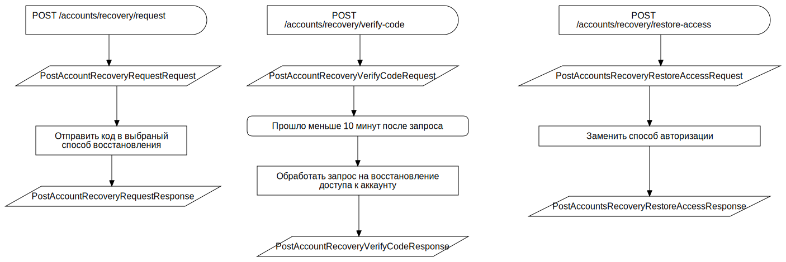

Восстановление аккаунта при потере доступа к соцсети F
FCFlowchart
TAction
::
Use Cases
::
Diagrams
::
PUC: Аккаунт
::
Восстановление аккаунта при потере доступа к соцсети
::
Восстановление аккаунта при потере доступа к соцсети F
Description
none
Diagrams

Восстановление аккаунта при потере доступа к соцсети FD
Properties
Name
Value
name
Восстановление аккаунта при потере доступа к соцсети F
Owned Elements
Восстановление аккаунта при потере доступа к соцсети FD
POST /accounts/recovery/request
PostAccountRecoveryRequestRequest
Отправить код в выбраный способ восстановления
PostAccountRecoveryRequestResponse
POST /accounts/recovery/verify-code
PostAccountRecoveryVerifyCodeRequest
Обработать запрос на восстановление доступа к аккаунту
PostAccountRecoveryVerifyCodeResponse
POST /accounts/recovery/restore-access
PostAccountsRecoveryRestoreAccessRequest
Заменить способ авторизации
PostAccountsRecoveryRestoreAccessResponse
Прошло меньше 10 минут после запроса